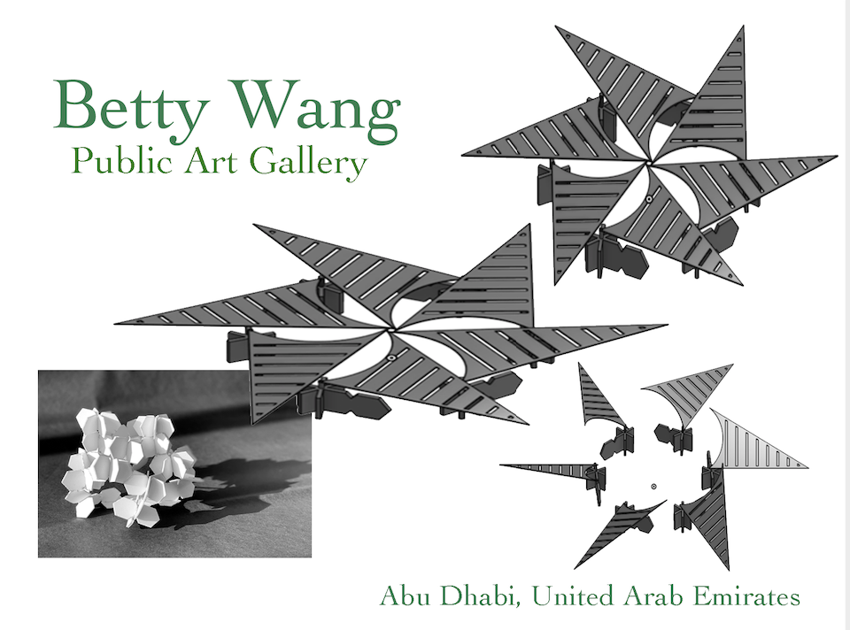

For this assignment, I decided to create an orginal design on OnShape. I spent a few week in AbuDhalbi last year and think that it is such an underrated city comparing with Dubai. People there did a wonderful job of incorporating their tranditional islamic culture with modern techonological society. I wanted to create somehting for this city that is visully appealing anf functional at the same time to attact more peopel to get to know this city.
I decided to design a museum with movable tops to create light effect as well as to protect art work for potentila damage for unfavorable weathers. Here's the final result:
As shown in the picture above, I started off with a rough modal builtby white cardboard for inspiration. I then used the Assembly function in OnShape to enable my design to move and mimic the rotating part of its design. The roof tops can be adjusted at any angles accoridng to weather and exhibiting requiremnets. I had a lot of fun playing aournd with differnet tools and also did quite a bit of calculation to make sure they don't run into each other on their own paths. I mainly used Extrude to create the shapes of the base, and added mate connetors to attached to top pieces while enabling them to move around the pivot. Becasue I wanted my design to be the same and visually aesthetic from all angles, I used Mirror to copy-paste each pillar, which also largely reduced the amount of repetitive work I had to do.